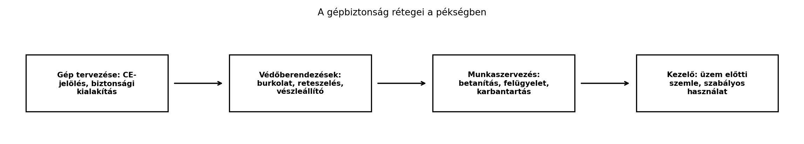

Hajnali 3 óra van. A dagasztógép karjai éppen a tésztát dolgozzák, amikor a tanuló észreveszi, hogy a védőrács félre van csúszva. Ha belenyúl, hogy megigazítsa a tésztát, a gép behúzhatja a karját. Egy másik helyzet: a szeletelőgép körkése nem áll le teljesen, és valaki rögtön letisztítja. Mindkét eset súlyos sérülést okozhat. A péknek nem elég a technológiát ismernie; tudnia kell felismerni a gépek veszélyeit, ellenőrizni a védőberendezéseket, és csak biztonságos géppel dolgozni. Ez az alfejezet ezt tanítja.
Képzelj el egy hajnali pékséget: a dagasztógép karjai forognak, a védőrács zárva, a vészleállító piros gombja elérhető helyen. A lisztadagoló fölött reteszelt burkolat van; ha felemelkedik, a keverő azonnal leáll. A tésztanyújtó hengerei előtt védőlemez, a szeletelőgép fűrészlapja mögött elhúzható védő. Ez a biztonsági rendszer nem a kényelmet szolgálja, hanem azt, hogy a gép akkor is megvédje az embert, ha az fáradt vagy hibázik. A gépbiztonság rétegei: a gép tervezése, a védőberendezések, a munkaszervezés és a betanított kezelő magatartása.

Definíció. Munkaeszköz minden gép, készülék, szerszám, berendezés vagy eszköz, amelyet a munkavégzés során használnak. A sütőiparban ilyen például a dagasztógép, a tésztanyújtó, a szeletelőgép, de a kézi tésztakaparó is.
Definíció. Gép a munkaeszközök azon csoportja, amelyben hajtás (motor, áttétel) van, és mozgó részekkel végez munkát. A berendezés gyakran nem önálló hajtással rendelkezik, hanem egy gép része vagy kiegészítője (pl. tésztakocsi, szakajtó). A készülék általában villamos vagy mechanikus eszköz, amely nem végez anyagmegmunkálást, de irányít, mér vagy szabályoz (pl. hőmérséklet-szabályozó). A szerszám kézi működtetésű, hajtás nélküli eszköz (pl. kés, vágó, forma).
Definíció. Veszélyes munkaeszköz az a gép vagy berendezés, amelynek mozgó, vágó, zúzó, hőközlő vagy villamos részei sérülést okozhatnak. A pékségben szinte minden gép veszélyes munkaeszköz. A veszélyes munkaeszközöket csak megfelelő védőberendezéssel, betanítás után szabad üzemeltetni.
Előírás. Az Európai Unióban a gépek biztonságára vonatkozó alapvető követelményeket a 2006/42/EK irányelv (ellenőrizendő: a gépirányelv hatályos szövege), illetve az új gépekre vonatkozó uniós rendelet (ellenőrizendő: pontos szám és átmeneti idő) határozza meg. Magyarországon ezt a munkavédelemről szóló 1993. évi XCIII. törvény és a munkaeszközök minimális biztonsági követelményeiről szóló rendelet (ellenőrizendő: hatályos rendeletszám) egészíti ki. A gyártó köteles a gépet úgy tervezni, hogy az a rendeltetésszerű használat során ne okozzon balesetet, és a géphez magyar nyelvű gépkönyvet, kezelési utasítást és megfelelőségi nyilatkozatot mellékeljen.
Definíció. A CE-jelölés a gyártó nyilatkozata arról, hogy a gép megfelel az Európai Unió vonatkozó biztonsági előírásainak. A CE-jelölés nem minőségi tanúsítvány, hanem a biztonsági követelményeknek való megfelelést jelzi. A gép csak akkor hozható forgalomba, ha viseli a CE-jelölést, és mellékelték hozzá a megfelelőségi nyilatkozatot.
Definíció. Az EK/EU-megfelelőségi nyilatkozat a gyártó által kiállított dokumentum, amelyben a gyártó kijelenti, hogy a gép teljesíti a vonatkozó biztonsági követelményeket. A nyilatkozatnak tartalmaznia kell a gép azonosítását, a gyártó nevét és címét, a vonatkozó irányelvek vagy rendeletek felsorolását, és egy aláírást. (ellenőrizendő: a nyilatkozat kötelező tartalmi elemei az aktuális szabályozás szerint)
Definíció. A gépkönyv (kezelési és karbantartási útmutató) a géphez mellékelt dokumentum, amely leírja a gép biztonságos üzemeltetését, a védőberendezések működését, a karbantartási teendőket és a tilos használati módokat. A pék tanulónak meg kell ismernie a gépkönyv biztonsági fejezetét, mielőtt a gépet kezelné.
Szabály. Sütőipari gép kezelését csak az a személy végezheti, aki a gépkönyv biztonsági előírásait ismeri, a gépre betanítást kapott, és felügyelet mellett gyakorolta a kezelést. A tanuló soha ne használjon olyan gépet, amelynek dokumentációja hiányzik, sérült, vagy amelyen a CE-jelölés nem látható; ilyenkor jelezni kell a felettesnek.
Figyelem. A gépkönyvben szereplő biztonsági utasításokat a könyv nem írja felül. Ha a gépkönyv és a tankönyv között eltérés van, a gépkönyv és a gyártói adatlap az irányadó.
A gépek veszélyes részeit védőberendezések óvják. A védőberendezés lehet fizikai akadály (védőburkolat), vezérlés (reteszelés, kétkezes indítás) vagy vészhelyzeti beavatkozó (vészleállító).
Definíció. A védőburkolat olyan rögzített vagy nyitható fizikai akadály, amely megakadályozza, hogy a testrészek a gép mozgó részeihez érjenek. A burkolatot úgy kell kialakítani, hogy azt csak szerszámmal vagy reteszelt ajtóval lehessen eltávolítani, és a gép működése közben ne lehessen megkerülni.
Definíció. A reteszelés olyan biztonsági kapcsoló, amely a védőburkolat nyitásakor azonnal leállítja a gép veszélyes mozgását, vagy megakadályozza az indítást. Például ha a dagasztógép védőrácsa nyitva van, a motor nem indulhat; ha pedig működés közben nyitják ki, a reteszelés leállítja a motort.
Definíció. A kétkezes indítás olyan vezérlés, amely csak akkor engedi a gép ciklusát elindítani, ha a kezelő mindkét kezével egyszerre nyomja a két indítógombot. Ezzel biztosítják, hogy a kezelő kezei az indítás pillanatában ne legyenek a veszélyes zónában. Pékségi tésztaprés vagy szeletelőgép indításánál alkalmaznak ilyet.
Definíció. A vészleállító (vész-stop) egy piros, sárga alátétes, gomb formájú kapcsoló, amely vészhelyzetben azonnal leállítja a gép összes veszélyes mozgását. A vészleállító mindig könnyen elérhető helyen legyen, és működését rendszeresen próbálni kell. A vészleállító nem a normál leállításra való.
Szabály. A védőberendezések feltétlenül ható (önmagukban védő) és feltételesen ható (a kezelő együttműködését igénylő) csoportba sorolhatók. A védőburkolat és a reteszelés feltétlenül ható: akkor is véd, ha a kezelő hibázik, mert fizikailag megakadályozza a veszélyes hozzáférést. A vészleállító feltételesen ható: csak akkor véd, ha a kezelő időben megnyomja. Ezért a gépbiztonság alapja a feltétlenül ható védőberendezés; a feltételesen ható megoldás csak kiegészítés.
Figyelem. A védőberendezés kiiktatása (pl. a reteszelés leszorítása, a burkolat leszerelése) tilos. Az ilyen gyakorlat súlyos balesetekhez vezet: a gép behúzhatja a kezet, vágást vagy zúzást okozhat. A reteszelés áthidalása a gépkönyv szerint is tilos, és jogi következménnyel járhat.
A lenti egyszerűsített géprajzon mind a négy védőberendezés-típus megtalálható. (1) A hajtást rögzített burkolat takarja, amely csak szerszámmal bontható. (2) A veszélyes zóna (7) előtt nyitható, rácsos védőajtó van, amelynek helyzetét (3) a reteszkapcsoló figyeli. (4) A kétkezes indítás két gombja olyan messze van egymástól, hogy egy kézzel ne lehessen mindkettőt elérni. (5) A vészleállító piros gomba sárga alátéten, (6) mellette a normál üzem zöld indító (I) és fekete leállító (O) gombja. A jobb oldali keretek a fenti szabály szerint csoportosítanak.
A jobb alsó betétkép a leggyakoribb tilos „megoldást” mutatja: a reteszkapcsoló ragasztószalaggal áthidalva – ilyenkor a védőajtó nyitásakor a gép tovább jár. Ne feledd azt sem, hogy a vészleállító megállítja a gépet, de nem választja le a hálózatról: tisztítás és beavatkozás előtt a főkapcsolót „0” állásba kell fordítani (vagy a dugaszt kihúzni), és biztosítani kell az újraindítás ellen. A HTML-kiadásban a védőberendezés-rétegek egyenként ki-be kapcsolhatók.
Definíció. Az ergonómia a munkahely, a gép és az emberi test kölcsönhatásával foglalkozik. A gép kezelőszerveit úgy kell elhelyezni, hogy a pék ne kényszerüljön kényelmetlen testhelyzetbe, ne kelljen túl nagy erőt kifejtenie, és a kezelőszervek egyértelműen felismerhetők legyenek.
Szabály. A kezelőelemek (indító, leállító, vészleállító, sebességváltó) legyenek jól láthatóak, megfelelő magasságban, a kezelő természetes mozgástartományán belül. A gombok színe és felirata jelölje a funkciót: az indítás általában zöld, a leállítás fekete vagy szürke, a vészleállító piros gomba sárga alapon (ellenőrizendő: MSZ EN ISO 13850 és a gépkönyv). A pedálokat csúszásmentesre kell kialakítani. A gyakran használt gépnél a péknek nem szabad állandóan hajolnia vagy nyújtózkodnia; ha mégis, a gép nem megfelelően van telepítve, és ezt jelezni kell.
A sütőiparban a leggyakoribb gépi baleseti formák:
Behúzás. A dagasztógép forgó karjai, a tésztanyújtó hengerei, a szíjhajtás vagy a lánchajtás behúzhatja a laza ruhát, hajat, kötényt vagy a kézfejet. Megelőzés: védőburkolat, hajháló, szűk ujjú munkaruha, ékszerviselés tilalma, a gép leállítása és áramtalanítása bármilyen beavatkozás előtt.
Zúzás. A tésztaosztó, a prés, a formázó vagy a kemenceajtó zúzhatja az ujjat, kezet. Megelőzés: kétkezes indítás, reteszelt burkolat, figyelem a mozgó alkatrészeknél, a kemenceajtó nyitásakor hővédő kesztyű.
Vágás. A szeletelőgép körkése, a kenyérszeletelő, a tésztavágó penge mély vágást okozhat. Megelőzés: a vágóél mögé szerelt védő, a gép leállítása és a penge megállása után tisztítás, vágásálló kesztyű a leállított gépen végzett tisztításnál. Tilos forgó gépnél kesztyűt viselni, mert a gép behúzhatja.
Égés. A kemence belső tere, a forró sütőlemez, a gőz és a forró zsiradék égési sérülést okoz. Megelőzés: hővédő kesztyű, hosszú nyelű eszköz, arcvédő a gőz kibocsátásakor; a forró zsiradék oltására soha ne használjunk vizet.
A behúzás, a zúzás és a vágás ugyanazon a néhány mechanikai „mintán” keletkezik, ezért ha ezeket felismered, minden új gépen meg tudod találni a veszélyes pontot. A lenti részletrajzokon a nyíl a mozgásirány, a sraffozott, szaggatott szélű terület a veszélyzóna: (1) két ellentétesen forgó henger találkozása, (2) a szíj felfutása a tárcsára, (3) a dagasztókar és a csésze közötti tér, (4) a lefelé mozgó présfej alatti rés, (5) az osztógép kamrájában mozgó dugattyú előtti tér, (6) a körkés szabadon maradt éle.
A védelem mind a hat esetben azonos logikájú: a veszélyzónát burkolat vagy reteszelés zárja el, a ruházat nem akadhat be, és a zónába csak leállított, leválasztott, megállt gépnél szabad benyúlni. A HTML-kiadásban az egyes részletekre mutatva megjelenik, melyik pékségi gépen fordul elő az adott veszély.
Áramütés. Sérült vezeték, csatlakozó, nedves kézzel érintett kapcsoló áramütést okozhat. Megelőzés: sérülést azonnal jelenteni, a gépet csak szakképzett villanyszerelő javíthatja, a pék soha ne nyúljon villamos részhez.
Gépbiztonság. A gépet csak az erre kijelölt, betanított személy kezelheti. A tanuló felügyelet nélkül nem dolgozhat géppel. A gépet tisztítani, karbantartani, beállítani csak leállított, áramtalanított, újraindítás ellen biztosított állapotban szabad. A forgó részeket meg kell várni, amíg teljesen leállnak. A védőburkolat eltávolítása, a reteszelés áthidalása, a futó gépbe nyúlás tilos.
Az alábbi, számozott lépésekből álló ellenőrzőlista minden sütőipari gépnél alkalmazható. Továbbvitt eredmény. Ezt a listát kell továbbvinnünk a későbbi gépes fejezetekbe (Dagasztógépek biztonságos üzemeltetése, Kenyértészta osztó- és csészeürítő gépek, Szeletelés, csomagológépek és jelölés stb.).
Eljárás. Üzem előtti gépbiztonsági szemle:
A próbajáratásnál is tartsd be: a védőburkolatok zárva, a kezelő a kezelőhelyen áll, és a vészleállító elérhető.
Tilos. A reteszelt burkolatot nyitott állapotban rögzíteni, a benyomott vészleállítót a hiba elhárítása előtt visszaállítani, a gépet idegen tárggyal letámasztani, a gépbe nyúlni leállítás nélkül.
Egy kis pékségben a tanuló azt vette észre, hogy a tésztanyújtó hengerei előtti védőlemez recseg, és néha beakad. Ahelyett, hogy jelezte volna, kinyitotta a védőt – a meglazult retesz nem állította le a gépet –, és kézzel próbálta megigazítani a tésztát. A henger behúzta a köténye végét; a mellette álló pék a vészleállítóval állította meg a gépet, mielőtt a kéz beszorult volna. A tanulság: a védőberendezés kinyitása nem játék; ha a gép hibás vagy a védő nem záródik, a gépet le kell állítani, áramtalanítani kell, és értesíteni kell a felettest. A védőberendezés működését soha nem szabad kézzel, a veszélyes zónában ellenőrizni.
Itt a minőségellenőrzés nem a termékre, hanem a gépbiztonsági ellenőrzésre vonatkozik. Az üzem előtti szemle során a pék azt ellenőrzi, hogy a gép biztonsági állapota megfelelő-e. A megfelelőség feltétele: minden védőberendezés működik, a dokumentáció rendelkezésre áll, a gépnaplóban a szemle rögzítve van. Ha bármely ellenőrzési pont nem teljesül, a gépet le kell állítani (ha már ment), és jelenteni kell a karbantartónak vagy a műszakvezetőnek.
Hiba: A pék a reteszelt védőburkolatot kiékelte, hogy a gép nyitott fedéllel is működjön. Ok: Kényelem, gyorsabb munka. Helyes gyakorlat: A burkolatnak mindig zárva kell lennie; ha akadályozza a munkát, a gépet vagy az eljárást kell módosítani, nem a biztonsági berendezést.
Hiba: A vészleállítót soha nem próbálták ki, mert „nem szokott kelleni”. Ok: A rendszeres ellenőrzés elhanyagolása. Helyes gyakorlat: Az üzemkezdéskor a vészleállító próba kötelező, és az eredményt a gépnaplóba be kell jegyezni.
Hiba: A tanuló a gépet anélkül kezelte, hogy a gépkönyv biztonsági fejezetét elolvasta volna. Ok: Hiányzó betanítás, rossz munkaszervezés. Helyes gyakorlat: A betanítást dokumentálni kell, a tanuló csak felügyelettel dolgozhat gépen, amíg a munkáltató nem minősíti önálló kezelésre alkalmasnak.
Hiba: Tisztítás közben a pék a szeletelőgép kését védőburkolat nélkül, járó motor mellett törölte. Ok: A gép leállításának elmulasztása. Helyes gyakorlat: Tisztítás előtt a gépet le kell állítani, áramtalanítani, és meg kell várni, amíg minden mozgó rész megáll. A pengét vágásálló kesztyűvel, a gyártói utasítás szerint kell tisztítani, kizárólag leállított gépen.
1. feladat (A) Sorold fel egy dagasztógép legalább három védőberendezését, és mondd meg mindegyikről, hogy feltétlenül vagy feltételesen ható-e.
2. feladat (A) Mi a különbség a gépkönyv és a megfelelőségi nyilatkozat között?
3. feladat (B) Egy tanuló az üzem előtti szemlén azt találja, hogy a tésztanyújtó védőburkolatának retesze nem old ki, amikor a burkolatot kinyitja. Milyen lépéseket tegyen a tanuló? Válaszd ki a helyes sorrendet: a) Jelentse a műszakvezetőnek, ne használja a gépet. b) Próbálja meg erővel becsukni, hátha jó. c) Áramtalanítsa a gépet, ha már áram alatt van. d) Használja a gépet óvatosan, figyelve.
4. feladat (B) Írj egy rövid (5–8 pontos) üzem előtti gépbiztonsági ellenőrzőlistát egy szeletelőgépre a fenti lista alapján, a vágásveszélyre is kitérve.
5. feladat (C) Egy pékségben a dolgozó a reteszelt védőburkolatot kiékelte, mert különben a dagasztógép nem indult el. Elemezd: mi a veszély, mi a helyes megoldás, és milyen következményekkel járhat a cselekedet?
6. feladat (D) Keresd meg a hibát: „A pék a dagasztógépet leállította, de áramtalanítás nélkül, a forgó karok megállása után belenyúlt, hogy kivegye a tésztát.” Helyes-e az eljárás? Indokold.
1. feladat (A) Lehetséges védőberendezések: védőrács és reteszelés (feltétlenül ható), kétkezes indítás (a kezelő kezeit az indításkor kényszerítően kívül tartja – feltétlenül ható vezérlés), vészleállító (kiegészítő védelem, a kezelő beavatkozását igényli – feltételesen ható). A túlterhelés elleni biztosíték a gépet és a vezetéket védi, nem a kezelőt a mozgó részektől, ezért nem gépbiztonsági védőberendezés (ellenőrizendő: a feltétlenül/feltételesen ható kategóriák munkavédelmi definíciója).
2. feladat (A) A gépkönyv a gép használatához, karbantartásához ad utasításokat, benne biztonsági fejezettel. A megfelelőségi nyilatkozat a gyártó nyilatkozata arról, hogy a gép megfelel az EU biztonsági követelményeinek; nem használati útmutató.
3. feladat (B) Helyes sorrend: először c) ha áram alatt van, áramtalanítani; majd a) jelenteni a műszakvezetőnek, és nem használni. A b) és d) tilos és veszélyes.
4. feladat (B) Például: 1. Környezet ellenőrzése. 2. Vágóél védőburkolata zárva, sértetlen. 3. Reteszelés próba. 4. Vészleállító próba. 5. Kezelőszervek. 6. Villamos csatlakozás. 7. Dokumentáció. 8. Próbajáratás, figyelve a penge leállására.
5. feladat (C) A veszély: a gép nyitott burkolattal működik, a kezelő belenyúlhat, behúzás veszélye. Helyes megoldás: a burkolatot vissza kell szerelni, és ha a gép hibás, le kell állítani, áramtalanítani, karbantartót hívni. Következmény: súlyos baleset, munkavédelmi eljárás, bírság (ellenőrizendő: a munkavédelmi szankciók aktuális mértéke).
6. feladat (D) Hibás. Bár a karok megálltak, a gép még mindig áram alatt van; ha véletlenül elindul, baleset. Helyes eljárás: leállítás, áramtalanítás, újraindítás elleni biztosítás, csak azután beavatkozás.
A munkaeszközök – szerszámok, készülékek, gépek, berendezések – biztonságos használata a pék alapkötelessége. A gépeket a gyártó CE-jelöléssel, megfelelőségi nyilatkozattal és gépkönyvvel hozza forgalomba; a gépkönyv biztonsági fejezetét a kezelőnek ismernie kell. A veszélyes részeket védőburkolat, reteszelés, kétkezes indítás és vészleállító védi. A védőburkolat és a reteszelés feltétlenül ható, mert fizikailag akadályoz; a vészleállító feltételesen ható, mert csak akkor véd, ha megnyomják. A leggyakoribb pékségi balesetek a behúzás, zúzás, vágás, égés és áramütés; mindegyik megelőzhető a védőberendezések használatával, a leállított gép elvével és a betanítással. Továbbvitt eredmény: az üzem előtti gépbiztonsági ellenőrzőlista (védőburkolat, reteszelés, vészleállító próba, kezelőszervek, villamos csatlakozás, dokumentáció) minden későbbi gépes fejezetben alkalmazandó (Dagasztógépek biztonságos üzemeltetése, Kenyértészta osztó- és csészeürítő gépek, Szeletelés, csomagológépek és jelölés). A gépet tisztítani, karbantartani csak leállított, áramtalanított, újraindítás ellen biztosított állapotban szabad, a futó gépbe nyúlni tilos.